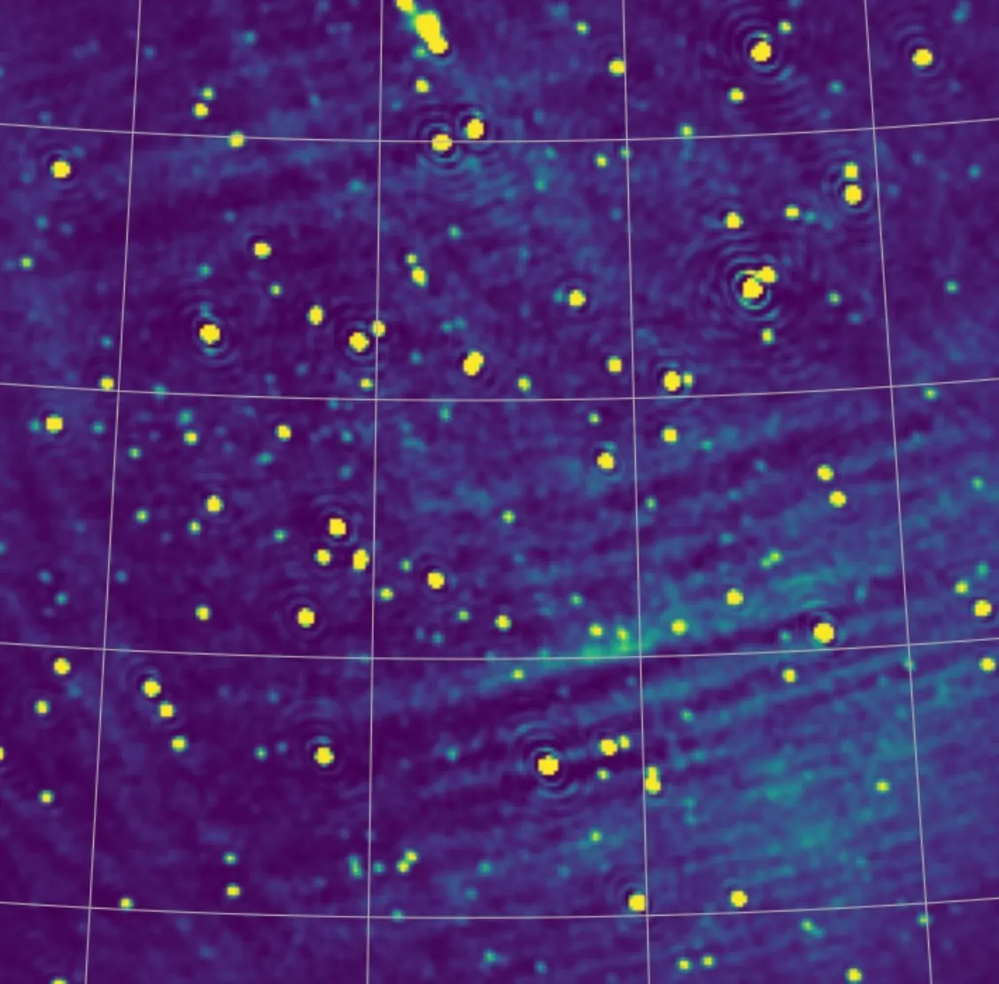
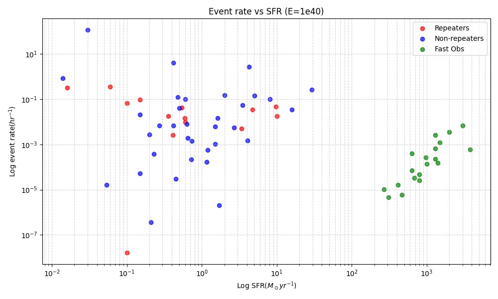
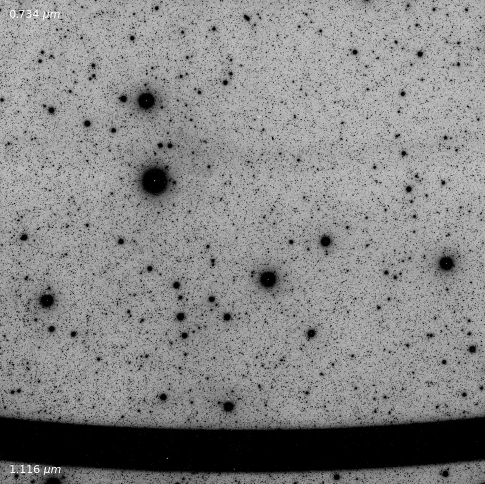
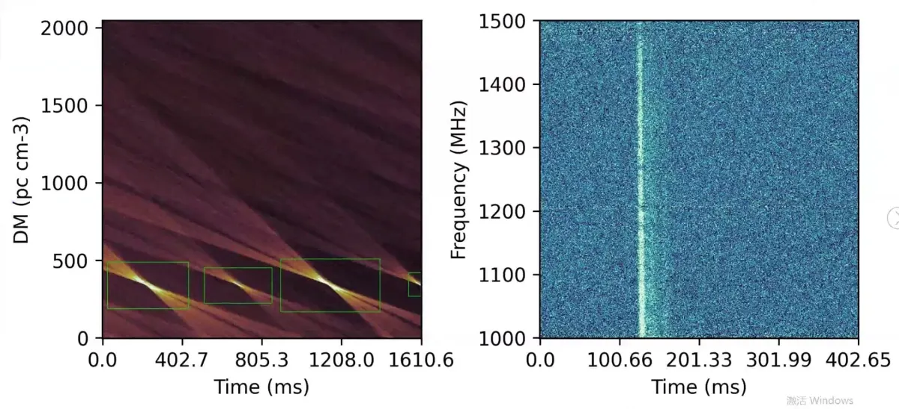

目前正在做的事 Current Work

稻城射电望远镜（DART）巡天源表构建 DART Survey Catalog
以稻城射电望远镜巡天数据为基础，进行源探测和交叉证认，目标是形成可检索、可复现的射电源表，为后续瞬变源搜索和科学研究提供基础数据。 Building a searchable and reproducible radio-source catalog from DART survey data, with source detection and cross-validation for future transient and scientific studies.
快速射电暴（FRB）及其持续射电源（PRS）的超新星起源模型 Supernova-Origin Models for FRBs and PRSs
围绕快速射电暴与持续射电源可能的超新星遗迹或致密星环境，建立从爆发、能量注入到射电辐射演化的物理图像，并尝试连接观测特征与源区环境。 Exploring whether FRBs and their persistent radio sources can arise from supernova remnants or compact-object environments, linking energy injection, radio evolution, and local source conditions.

快速射电暴（FRB）事件率与宿主星系恒星形成率的统计研究 FRB Event Rates and Host-Galaxy Star Formation
结合快速射电暴样本、宿主星系性质与选择效应，比较事件率随恒星形成率和红移的变化，探索FRB族群与恒星形成历史之间的统计联系。 Combining FRB samples, host-galaxy properties, and selection effects to compare event rates with star formation and redshift, and to probe the statistical connection between FRB populations and stellar evolution.

SPHEREx数据中亚稳态氦的研究 Metastable Helium in SPHEREx Data
基于 SPHEREx 光谱数据提取亚稳态氦（He I 1083 nm）谱线强度，研究其在地球高层热层中的时空分布特征，分析冬季氦隆起、极区增强及太阳活动相关的变化过程。 Extracting metastable helium (He I 1083 nm) line intensities from SPHEREx spectral data to study their spatiotemporal distribution in the Earth's upper thermosphere, analyzing winter helium bulges, polar enhancements, and solar activity-related variations.
银河系气体吸积与弥散电离云 Galactic Gas Accretion and Diffuse Ionized Clouds
关注中间速度云（IVCs）和高速云（HVCs）向银河系盘面的气体输运过程，探索它们作为银河系星际介质补给来源的作用。结合 JWST 发射线观测与多波段数据，研究这些云的电离状态、激波特征及其与银河系气体循环的联系。 Focusing on the gas transport processes of intermediate-velocity clouds (IVCs) and high-velocity clouds (HVCs) toward the Galactic disk, exploring their roles as sources of Galactic interstellar medium supply. Combining JWST emission line observations with multi-wavelength data to study the ionization states, shock characteristics, and connections to the Galactic gas cycle.
基于被动雷达的空间态势感知 Space Situational Awareness with Passive Radar
利用被动雷达技术进行空间态势感知，研究其在监测和识别空间目标方面的应用。 Using passive radar technology for space situational awareness, investigating its applications in monitoring and identifying space objects.

中国天眼（FAST）数据中的脉冲星搜索 Pulsar Searches in FAST Data
面向FAST观测数据开展脉冲星候选体搜索、筛选和验证，结合时域信号处理与机器学习方法，提高弱信号和复杂环境中的发现效率。 Searching, filtering, and validating pulsar candidates in FAST observations, combining time-domain signal processing with machine learning methods to improve discovery efficiency.
已发表成果 Published Work
论文 Papers
研究进行中 In progress
工具 / 软件 / 管线 Tools / Software / Pipelines
开发进行中 In progress
会议报告 Talks and Colloquia
2026星际物质及动态宇宙（VII）论坛会议 Forum on Interstellar Matter and the Dynamic Universe (VII), 2026
2026.1.10，海报展示 2026.1.10, poster presentation
FRB2026 FRB2026
2026.7.6-2026.7.10，3 分钟报告 2026.7.6-2026.7.10, 3-minute presentation
参考 Reference
Li Di Astro
https://lidi-astro.com
中国科学院国家天文台星际介质组 Interstellar Medium Group, National Astronomical Observatories, Chinese Academy of Sciences (NAOC)
http://groups.bao.ac.cn/ism/tzsx/202105/t20210525_640943.html
S. R. Kulkarni
https://sites.astro.caltech.edu/~srk/
很多想法 / 想做的事 Ideas & Future Directions
小射电望远镜观测 Small Radio Telescope Observations
搭建或使用小型射电望远镜进行可持续观测，把仪器、数据采集、定标和简单科学目标连接起来，让个人尺度的观测也能进入真正的科研流程。 Building or using small radio telescopes for sustained observations, connecting instrumentation, data acquisition, calibration, and compact science goals.
寻找外星人 / 研究宇宙社会 SETI and Cosmic Sociology
把寻找地外文明的观测问题和“宇宙社会学”的思想实验放在一起，思考技术文明的可观测痕迹、沉默的原因，以及我们如何定义宇宙中的交流。 Bringing SETI and cosmic-sociology thought experiments together to think about observable technosignatures, the causes of cosmic silence, and how communication might be defined on astronomical scales.